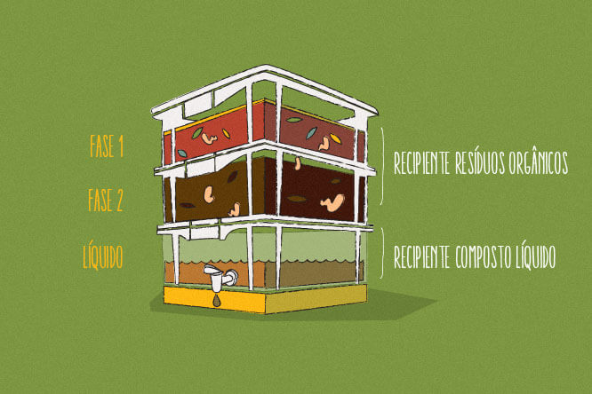

Na imagem a baixo podemos visualizar como se da todo o processo de compostagem, deste o inicio do processo, ate o seu último estágio, com a saída do produto final.

Esquema de funcionamento de uma composteira.
Neste primeiro estágio, ocorre a adição de alimentos para as minhocas, sendo eles, frutas, legumes, folhagensem geral, além da serragem para garantir que o alimento permaneça em bom estado para as minhocas se alimentarem.
Já no segundo estágio, as minhocas se alimentam de todo o alimento adicionado por você, gerando o liquido chamado "Chorume" que se da
origem graças a alimentação e decomposição de toda materia orgânica adicionada a composteira.
Na terceira e última fase, se da a saída do "Chorume", rico em nutrientes para vocês adubar sua terra, além da terra da composteira já estar rica em nutrientes, você pode fazer uso do"Chorume" para acentuar o poder produtivo de sua horta.